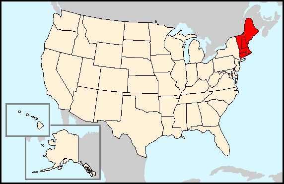
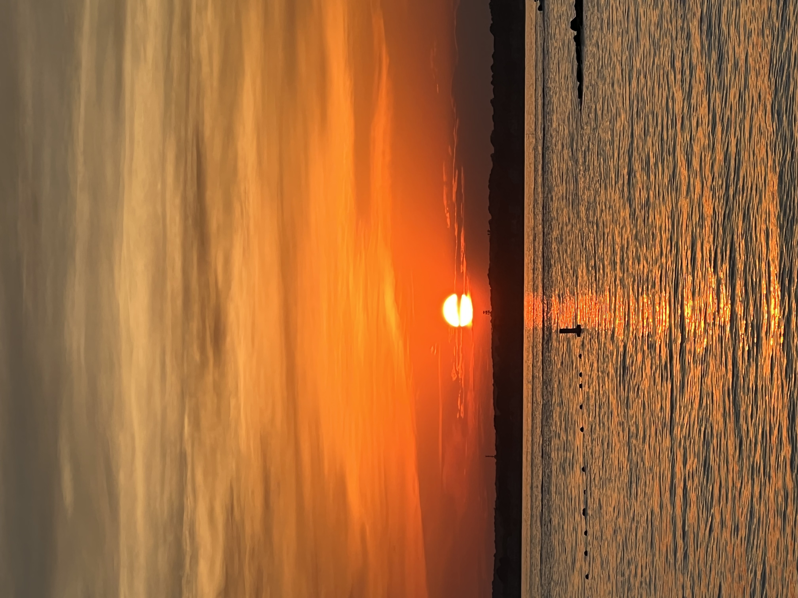

All About New England
Have you or someone you know been thinking about relocating? The United States has a lot to offer but one particular region truly has it all. New England is a beautiful place with 6 different states where you can find all sorts of activities. Discover what you can do in each state and how you can spend your time through this article
Maine
Maine is the largest state by area in New England and is also the most northern state out of New England. Maine has a population of about 1.3 million people despite its large size of around 30,000 square miles. Maine is well known for its Acadia National Park which is the largest national park in New England. Maine also has a large coastline which makes it very popular for one specific food. Lobster is a very popular dish in Maine and many travel across the world to have a taste of Maine's Lobster. Maine's Largest City is Portland. A fun fact about Maine is that it is the only state in the US to border only one other state.

New Hampshire
New Hampshire, which borders Maine, has a population of around 1.3 million but unlike Maine has a much smaller size of around 9,000 square miles. New Hampshire is well known for its beautiful mountain ranges and large lakes regions. New Hampshire is home to the tallest mountain in the Northeast, which is Mount Washington. Mount Washington stands at over 6,000 feet tall and many people visit this mountain to see the beautiful views. New Hampshire is also home to many lakes including the biggest lake of Lake Winnipesauke. A fun fact about New Hampshire is that it has the smallest coastline in the US of only 13 miles long.
Vermont
Vermont, which borders New Hampshire, has a small population of only about 645,000 and a size of about 9,000 square miles. Vermont is also well known for its mountain ranges and peak fall foliage. Many travel from across the world to experience the exciting skiing of Vermont. Vermont is also well known for its delicious local maple syrup. A fun fact about Vermont is that it has the second smallest population in the US.
Massachusetts
Massachusetts is by far the largest state by population in New England with around 6.9 million people living there in a size of about 10,000 square miles. Massachusetts is well known for its city of Boston which is home to famous sports teams such as the Boston Bruins, Boston Celtics, and Boston Red Sox. Along with its cities Massachusetts is also well known for its prestigious universities with some of the hardest schools such as MIT and Harvard. Massachusetts is also famous for its coast of Cape Cod which is a peninsula with many different beaches. A fun fact about Massachusetts is that it is home to the biggest city in New England.
Conneticut
Connecticut is also a fairly populous state with a population of about 3.3 million and a size of around 5,500 square miles. Connecticut is well known for its beautiful beaches and fall foliage. Connecticut, like Massachusetts, is also known for its prestigious universities such as Yale University. A fun fact about Connecticut is that it is the southernmost state in New England.
Rhode Island
Rhode Island is the final state in New England and has a population of about 1.1 million and a small size of around only 1,500 square miles. Rhode Island is also well known for its beautiful beaches. Providence Rhode Island is Rhode Island’s biggest city and is well known for its universities such as Brown University. A fun fact about Rhode Island is that it is the smallest state in square miles across the entire United States.
Who you might know from New England:
- Adam Sandler
- Matt Damon
- Amy Poehler
- Chris Evans
- Mark Wahlberg